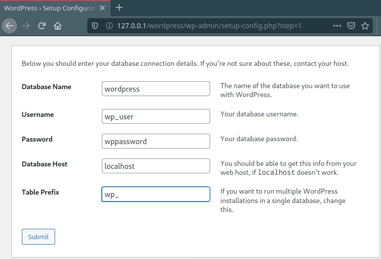
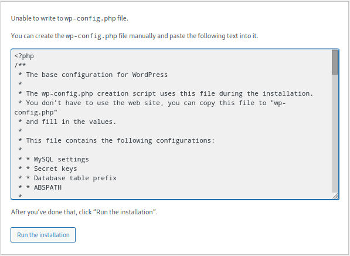
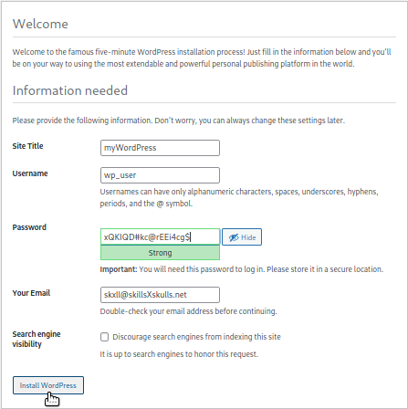
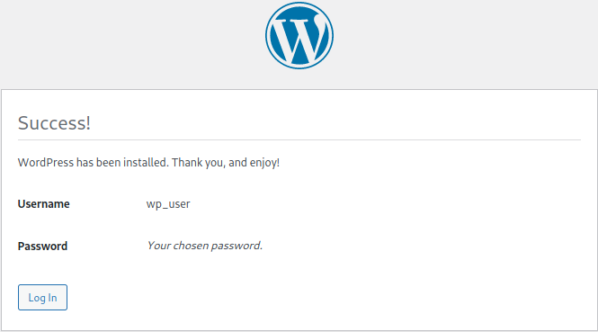
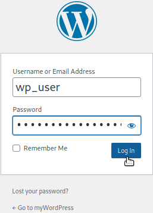
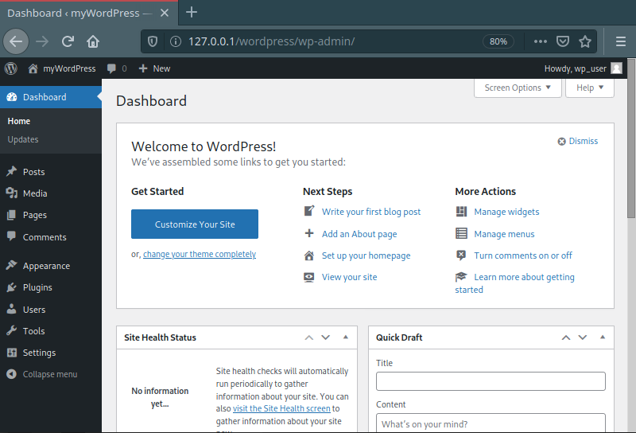
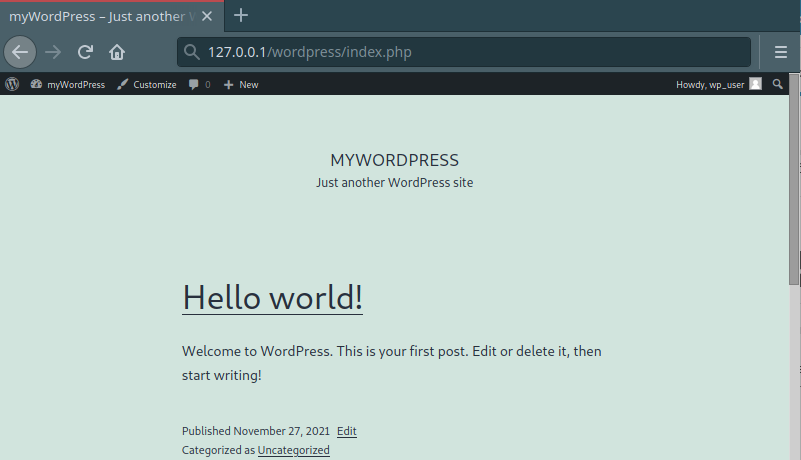

☣ INSTALACIÓN DE PAQUETES Y DEPENDENCIAS
⦾ Apache + PHP:
⦾ MySQL: Instalación y Configuración inicial
mysql_secure_installation es un script de Shell disponible en sistemas Unix que permite mejorar la seguridad de la instalación de MariaDB permitiendo:
•
Establecer una contraseña para las cuentas root.
•
Limitar el login de la cuenta root exclusivamente a local, impidiendo el acceso externo.
•
Eliminar las cuentas de usuario anonymous
•
Eliminar la base de datos de prueba, a la que por defecto pueden acceder los usuarios anónimos.
•
Estos cambios se hacen efectivos instantáneamente, sin necesidad de reiniciar el servicio MySQL/MariaDB.
☣
sudo mysql_secure_installation
Change root password? [Y\n]
y
New password:
Re-enter new password:
Password updated succesfully!
Reloading privilege tables..
... Success!
Remove anonymous users? [Y\n]
y
... Success!
Disallow root login remotely? [Y\n]
y
... Success!
Remove test database and access to it? [Y\n]
y
- Dropping test database...
... Success!
- Removing privileges on test database...
... Success!
Reload privilege tables now? [Y\n]
y
... Success!
Cleaning up...
All done! If you've completed all of the above steps, your MariaDB installation should now be secure.
Thanks for using MariaDB!
☣ CONFIGURAR LA BBDD PARA WORDPRESS
• CREATE DATABASE
Crea la BBDD llamada wordpress.
• GRANT ALL PRIVILEGES
Otorga todos los privilegios del dominio wordpress.*
TO
Al usuario wp_user en el localhost
IDENTIFIED BY
Identificado con la password wppassword
• FLUSH PRIVILEGES
Releer los privilegios de las tablas de concesión en la base de datos y libera la memoria caché
MariaDB [(none)]>
CREATE DATABASE wordpress;
Query OK, 1 row affected (0.000 sec)
MariaDB [(none)]>
GRANT ALL PRIVILEGES On wordpress.* TO 'wp_user'@'localhost' IDENTIFIED BY 'wppassword';
Query OK, 0 row affected (0.000 sec)
MariaDB [(none)]>
FLUSH PRIVILEGES;
Query OK, 0 row affected (0.000 sec)
MariaDB [(none)]>
EXIT
Bye
☣ INSTALACIÓN DE WORDPRESS
☣
unzip wordpress.zip

Si llegado a este punto de la instalación, el servidor no es capaz de escribir en el archivo wp-config.php es porque este no existe.
Crealo en /var/www/html/wordpress/wp-config.php, copia y pega la configuración que te muestra y haz Click en 'Run the Installation':

Crealo en /var/www/html/wordpress/wp-config.php, copia y pega la configuración que te muestra y haz Click en 'Run the Installation':


Login con las credenciales configuradas en el proceso de instalación y accederás al Panel de Configuración de WordPress:


